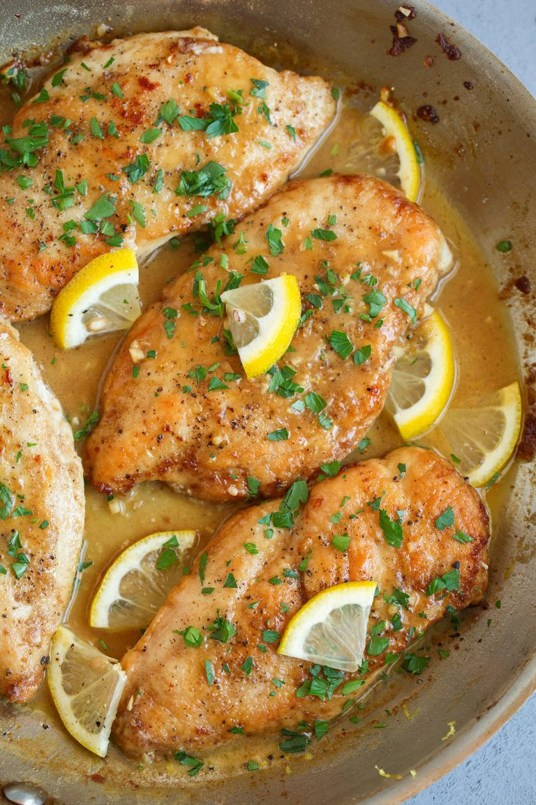

Lemon Chicken

Description
This recipe is used to make a mouthwatering lemon chicken meal that
is fast and easy to make!
ingredients
- Chicken breasts
- Flour
- Salt and pepper
- Olive Oil
- Butter
- Garlic (if you love it feel free to add more!)
- Chicken Broth
- Lemon
- Parsley (which is totally optional)
Steps:
- pound the chicken breasts out until you’ve
got fairly thin chicken cutlets. For a shortcut
here you could buy thin cut chicken.
-
season both sides of the chicken with salt
and pepper and dredge each side in flour.
-
Heat the pan and melt olive oil and butter in pan.
Add the chicken breasts and sear on both sides until
golden brown and cooked through.
-
Transfer the chicken to a plate then saute the garlic.
Pour in chicken broth then scrape up browned bits
from the bottom (it gives it the best flavor!).
Stir in lemon juice and bring mixture to a simmer,
reduce heat slightly and let simmer until it’s
reduced by half, about 2 minutes.
-
Stir in the butter and lemon zest and melt butter through.
Then return chicken to pan, spoon pan sauce over
chicken breasts and sprinkle with parsley.
Serve chicken warm. See, easy breezy, right?